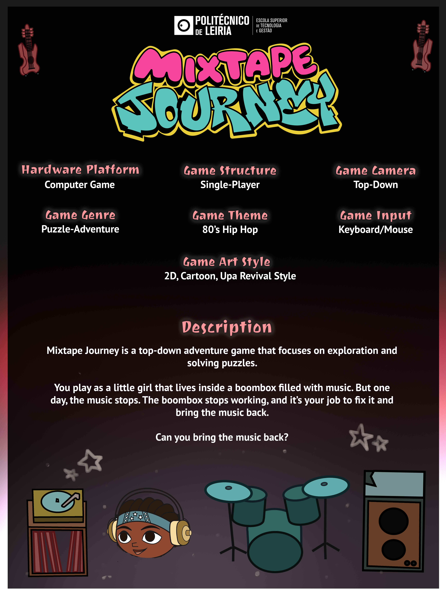
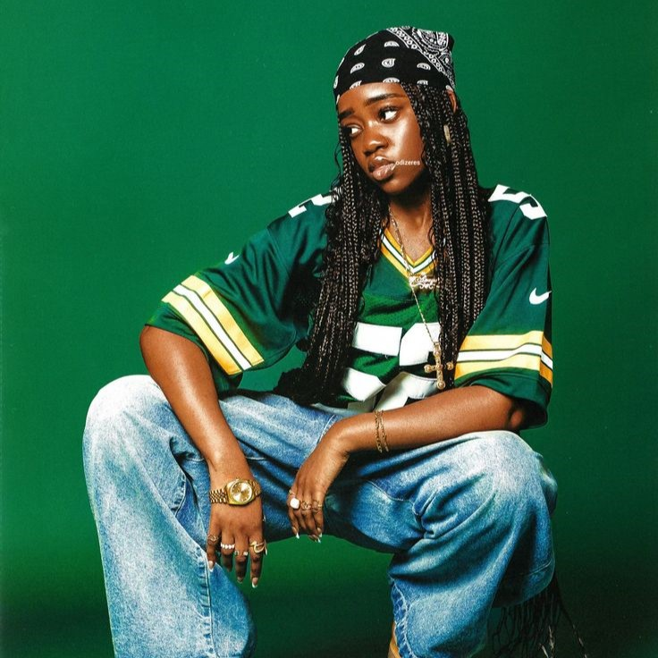
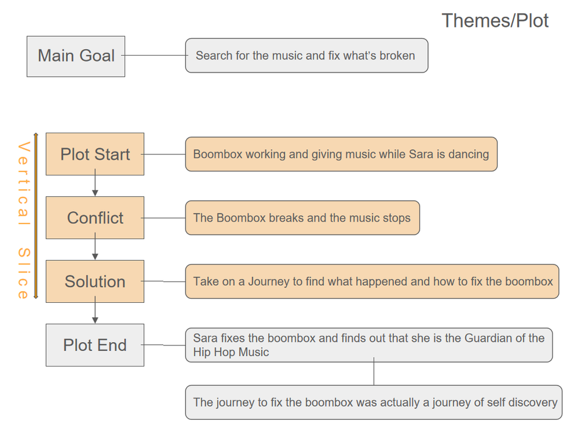

Mixtape Journey
Narrative Design
Context
Description
Mixtape Journey is a top-down adventure game that focuses on exploration and solving puzzles.
You play as a little girl that lives inside a boombox filled with music. But one day, the music stops. The boombox stops working, and it’s your job to fix it and bring the music back.
Team: 3 people (1 Game Designer/Project Manager; 1 Game Artist; 1 Game Programmer)
My role: Game Designer/Project Manager
Development time (up to vertical slice): 6 months
Game Engine: Unity 6
Other programs used: Google Docs, Excel, Powerpoint, Adobe Illustrator, GitHub, Adobe Photoshop
What have I learned with this project?
This was my first-year project, and also the first project I did with more strict game design guidelines. This was my first step towards developing my own method of designing games and narratives in a way that works for me.
Above all, this project was a journey of discovery. I learned what works for me, and what definitely doesn’t. I also learned new ways to document my choices, as well as the importance of doing so.
I look back at this project and I’m somewhat ashamed of what it became, this was mainly due to my lack of experience. But I’m also very grateful for developing it, because it taught me so much! It was one of those projects that allowed me to level up my game.
I’m most grateful for having done it and failed so miserably in some aspects, this is what helped me grow tremendously. To fail so drastically and to so desperately want to be better, to do better. So I’m most grateful for this experience. But please don’t look at this project as all I’m capable of; because after all, this was just the start of it.
Wanna Know More About This Project?
Check Out Our Game Page!
What I wanted the player to feel while playing this game
I wanted the player to feel the urge to bring the music back, just as the character. I also wanted the player to remain in this curious state regarding this world, and the turn of events (for example why did the music disappear?)
How was this achieved?
Music
In order for this to happen I took various approaches, the first one was in hopes of keeping the player interested and motivated to bring the music back. For this to happen I made sure that the game started silent, only with mechanical sounds in the background, or even, sounds of some short circuits (to convey the sense of the boombox being broken).
Oh but I didn’t want the player to just miss the music. I also wanted them to be motivated to bring it back! And so I thought, since a game can be very boring without any music, why don’t we make the music come back slowly, as the player solves puzzles, and thus, fix the boombox? And that’s exactly what we did! The game is divided in sections, and as the player completes these sections, the music starts to come back.
The idea was that the player would “feel”, or rather, hear the outcome of his efforts, and thus feel motivated to achieve more.
Narrative
The next approach was in hope of keeping the player in this curious state regarding the world and narrative. I wanted the narrative to be unlocked through the game, but I didn’t want the player to be “force fed” narrative; I wanted them to figure it out on their own, as they play the game. I wanted the player to choose how much narrative they ought to know, while making sure there was some narrative that they must know.
For starters, I wanted the narrative to come through in-game character-object interactions. And I wanted the narrative to come off as bits of information that the player had to piece together, almost as in a puzzle, to figure out the hidden narrative in the game (that was the true essence of Sara and this world). This was achieved by leaving “clues” in diverse objects instead of everything in one place.
Plot Summary
Our game’s narrative focuses on the search for the music that vanished and fixing the broken boombox. In other words, the journey of the main character to find out who she really is and the journey to bring the joy back into her life.
The game starts with the boombox working and Sara dancing to the sounds of the hip-hop music. But suddenly, the boombox breaks and the music stops playing. This is when Sara decides to go on the journey to explore the boombox and fix it in order to get the music back. As Sara explores the boombox she finds more information about herself and the world she lives in. She uses this information to solve puzzles and understand herself better.
In the end of the game (not in the Vertical Slice) she finds out that she is the guardian of the hip hop music and the journey to fix the boombox was a journey of self discovery, a journey to understand that the boombox and her are one and the boombox doesn’t work without her.

Game World
The world our game takes place in happens in a fantasy world where there are tiny persons living inside objects, one for each object. Our game is set in the 80’s environment, that is why we chose the main character and place where the game takes place to be related to hip-hop from the 80’s.
These tiny persons that live inside the objects are nothing more than the keepers of the object. They exist with the object as one, which means that when the object breaks their job is to fix it and make it work again. The object state reflects these tiny people's state too, so, what seems to be a journey to fix an object is really a journey of self healing for these tiny people.
Our game’s object keeper is Sara, she is the keeper of the boombox. Like any other object, the place she usually lives at is in the heart of the object, this means that this is the place that will show the most signals of life inside the boombox.
Sara

Due to the nature of our game world our game only has one character, Sara. Sara is a little child and the keeper of the boombox. She doesn’t know straight away that she is the keeper of the boombox, this is something she finds out in the end of the game (end of full game, not the vertical slice).
Sara is an avid music lover, her whole life she has been surrounded by music, more specifically hip-hop music. She is an active child that loves dancing, playing instruments and passes the time daydreaming the meanings behind the songs she is always listening to and what the person that wrote them might be feeling when they wrote them. Having these types of questions is normal for her, since she has been alone all her life she wonders a lot about everything, and consequently, lives with a lot of questions left lingering in her head.
When the game starts the boombox breaks and the music stops. Knowing that her precious music is gone she doesn’t think twice about it and ventures herself into places she has never been before in order to fix the boombox and bring the music back so that she can keep dancing.
Plot Development & Game
The plot develops through bits of information scattered throughout the map (as mentioned before). And as previously mentioned, the game progresses through level/puzzle stages unlocking gradually. Therefore, each time the player unlocks a new section, they unlock new areas that will contain new information and narrative context (these areas can be simple rooms/puzzle rooms/secret areas).
It is also worth mentioning that the vertical slice explores just the first section in this complex boombox-world. So it marks only the beginning of the solution (as shown in the image below).
